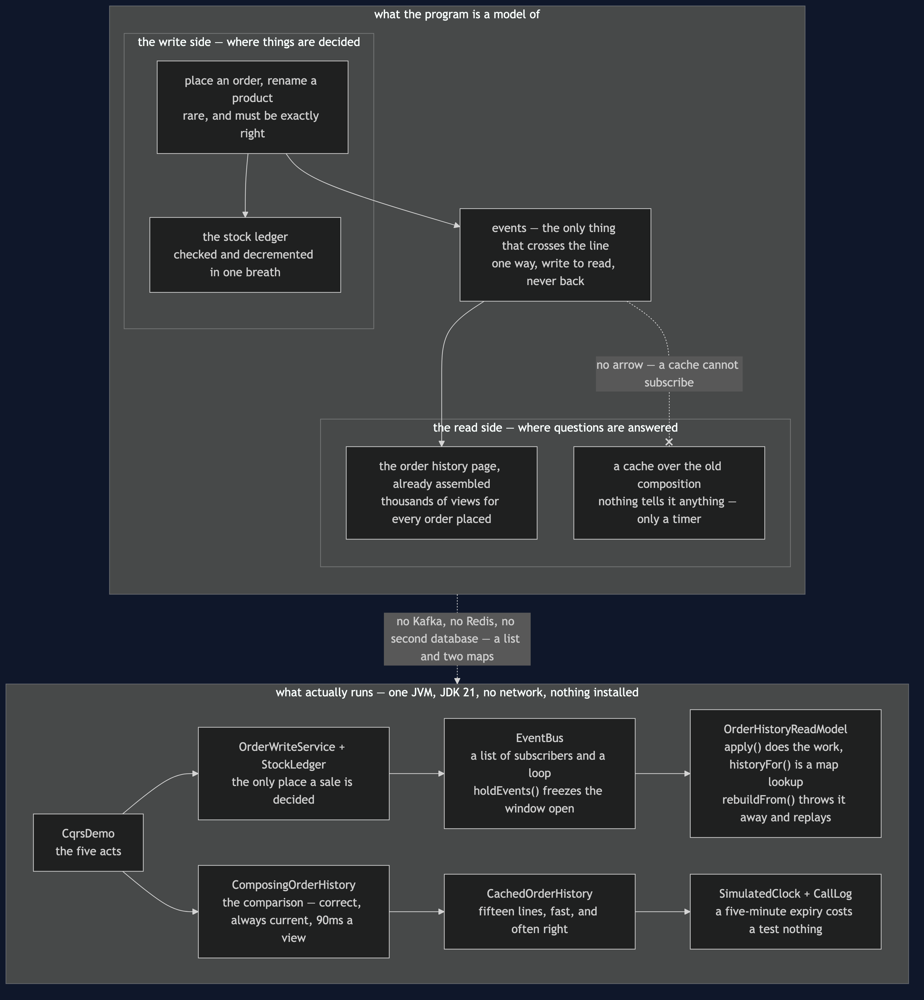
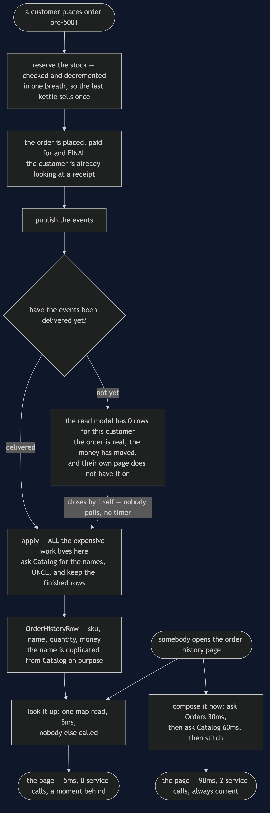
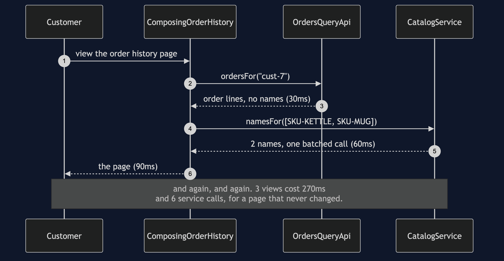
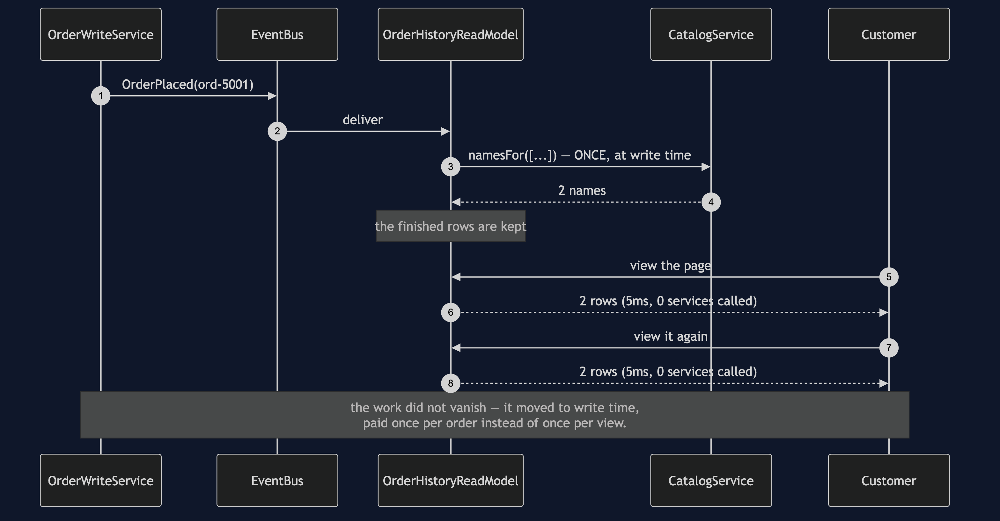
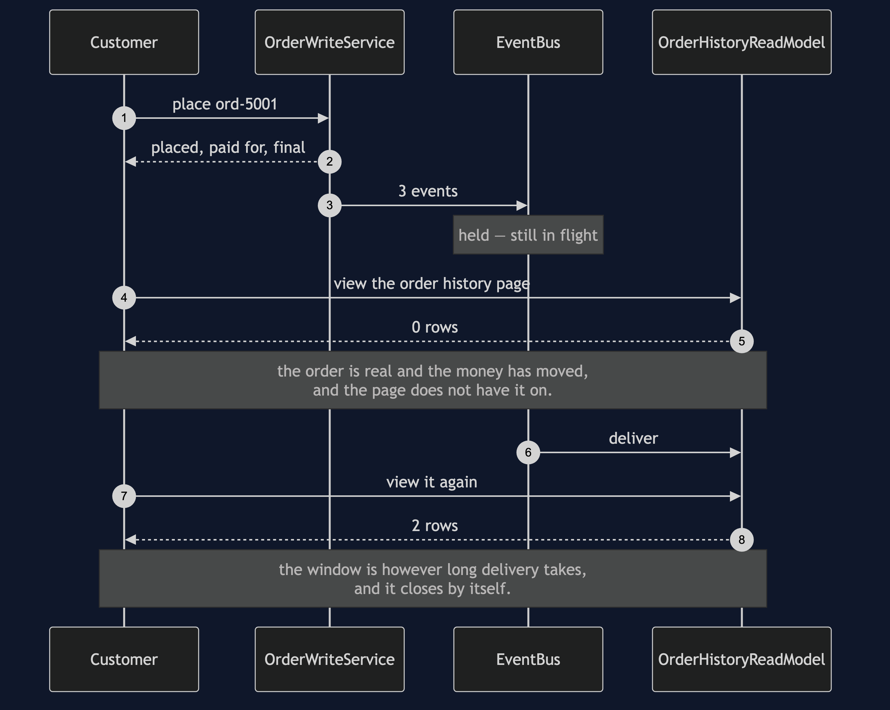
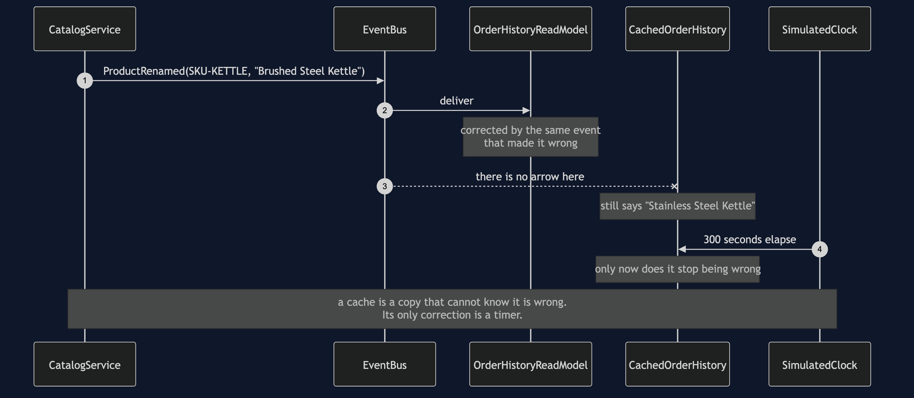
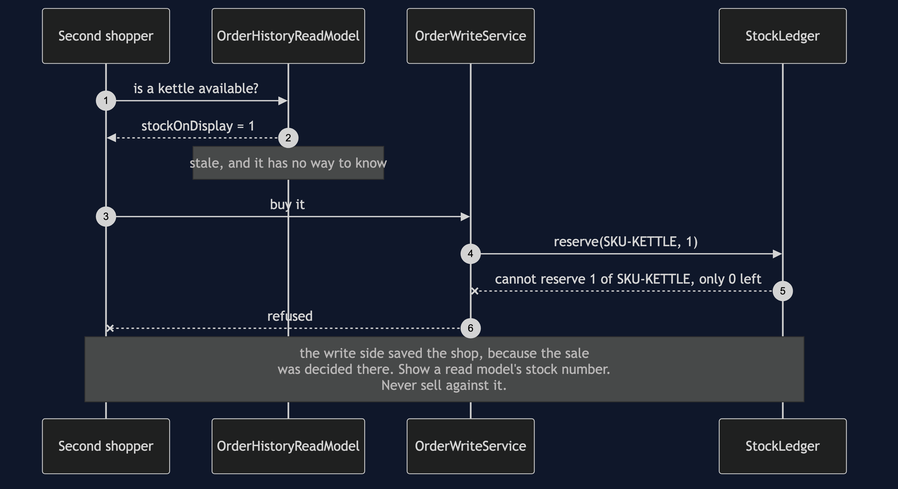

CQRS
In plain words: keep two shapes of the same data — one built for changing it safely, and a second, pre-assembled one built purely for reading quickly. Every change to the first sends an update to the second.
Everyday analogy: a library's card catalogue. The books on the shelves are the real thing, and there is exactly one copy of each — that is where changes happen. The card catalogue is a second, redundant copy of the same information, arranged by author and by title, existing only so that nobody has to walk the shelves to find something. Both facts you need are in the analogy: looking up a card is far faster than searching the shelves, and a book that arrived this morning may not have a card yet. Reading something a moment out of date is exactly what "eventually consistent" means, and it is fine for a catalogue and fatal for the count of how many copies are left to lend.
In the shop, a customer's order history page is read thousands of times more often than an order is placed. Composing it from two services on every view is slow and, since the page does not change between views, pointless.
Composing on every view
80ms -> 110ms Orders OK
110ms -> 170ms Catalog OK
170ms -> 200ms Orders OK
200ms -> 260ms Catalog OK
260ms -> 290ms Orders OK
290ms -> 350ms Catalog OK
3 views cost 270ms and 6 service callsThree refreshes, six calls, and three identical pages. Nothing is wrong with ComposingOrderHistory — it is the previous project's answer, and for a page nobody looks at it is the right one. It also has one real advantage the read model can never claim: it is always up to the second.
The page kept ready
80ms -> 85ms ReadModel SERVED 2 row(s), 0 other services called
85ms -> 90ms ReadModel SERVED 2 row(s), 0 other services called
90ms -> 95ms ReadModel SERVED 2 row(s), 0 other services called
3 views cost 15ms and 0 service calls
the work did not vanish: Catalog was called 1 time when the order was placedOrderHistoryReadModel has two halves, and reading them separately is the fastest way to understand the pattern.
The apply half runs when an event arrives — when an order is placed, or a product renamed. All the expensive work is here, including the one call to Catalog that turns skus into names. The historyFor half is one lookup in a map: no join, no composition, nobody else called.
CQRS does not make work disappear. It moves work from the read to the write. That is a good trade exactly when reads outnumber writes, and a bad one when they do not.
OrderHistoryRow stores the product name, duplicating what Catalog holds. The duplication is the point rather than a mistake — the page is already the page. The price is ProductRenamed events and the code that applies them.
The window where it is wrong
ord-5001 is placed, paid for, and final
events still in flight: 3
rows on the customer's order history page: 0
events delivered -> rows on the page: 2A customer places an order and does not see it on their own order history page. This is the honest cost, and EventBus.holdEvents() exists so that it can be shown rather than described. Note what the window is: however long delivery takes, and it closes by itself. Nobody polls, nobody retries, and no timer is involved.
Why a cache is not the same thing
Catalog renamed the kettle
cache says: Stainless Steel Kettle
read model says: Brushed Steel Kettle
the cache will keep saying that for 300 seconds, because nothing tells it otherwiseCachedOrderHistory is a five-minute expiry over the composition. It is fifteen lines, it is fast, every test in CachedOrderHistoryTest passes, and it is often the right answer.
The difference from a read model is not speed, and it is not staleness — both are stale. It is why each one is stale and for how long:
- A read model is wrong until the event arrives, and is corrected by the event that made it wrong.
- A cache is wrong for however long its timer says, whatever happens. The customer places an order, the cache is told nothing, and it keeps serving the older page. It cannot know it is wrong, because nothing tells it.
itServesAPageItKnowsNothingAbout pins that down, and thereIsNoFreeSetting pins down the escape everybody tries: dropping the expiry to a second does not make the cache correct, it just pays for the composition again every second.
The number you must never read from a read model
read model still shows on the shelf: 1
the ledger actually has: 0
a second shopper arrives and the read model says yes
the ledger refused: cannot reserve 1 of SKU-KETTLE, only 0 leftStockLedger is the write side's count of what is on the shelf. It is checked and decremented in the same breath, so two shoppers reaching for the last kettle cannot both succeed. The read model also carries a stock number, and it is faster to read, and it is right there.
Showing it is fine — "only 2 left" sells kettles. Selling against it is a bug that only appears on the busiest day of the year, because it is by design a moment out of date, and a moment is all it takes to sell the same kettle twice. In the demo the write side is what saves the shop, purely because the sale was decided there.
If you take one thing from CQRS, take that line.
The other two costs
The read model is a second thing to build, test, back up and migrate. It is a whole store with its own schema, its own deploys, and its own bugs, and its bugs are the awkward kind: it is wrong and nothing throws.
It will need rebuilding. rebuildFrom throws the projection away and replays the events, and the demo rebuilds two rows from six events. Every read model needs that method, because the comfortable answer to "it is wrong, now what" is that it can be discarded and rebuilt from facts held somewhere else. A read model that cannot be rebuilt is not a projection — it is a second copy of the truth, and now there are two truths.
One free benefit worth noticing: readsSurviveAnOutage shows the read model answering while Catalog is down. It needs nobody at read time, so nobody at read time can break it.
One JVM, no infrastructure
No Kafka, no Redis, no second database. EventBus is a list of subscribers and a loop; the read model is two maps; SimulatedClock makes a five-minute cache expiry cost a test nothing. Nothing sleeps. Swapping in a real broker would change none of the reasoning above, which is exactly why the pattern can be taught this way.
Technologies and versions
Nothing here is a range and nothing is latest: a course that worked last year and does not work today is worse than one that never took the dependency.
| What | Version | Why it is here |
|---|---|---|
| Java | 21 | The repository standard, requested through the Gradle toolchain block |
| Gradle | 9.2.1 | The wrapper in this directory; no separate install needed |
| JUnit 5 | 5.10.2 | The 18 tests, through junit-bom so the Jupiter artefacts cannot disagree |
That is the entire list, and the short version of it is the point. This project has no runtime dependency at all — the dependencies block in build.gradle names nothing but JUnit, and JUnit is testImplementation. There is no Kafka, no Redis, no second database and no container; the event bus is a list of subscribers and a loop, and the read model is two maps. Every one of the twelve projects in this category is built the same way, so a reader who can run one can run all of them, offline, with a JDK and nothing else.
Learning Material
| Document | What it covers |
|---|---|
docs/problem-statement.md | A page composed correctly on every single view, and why a cache is the obvious answer and the wrong one |
docs/cqrs-pattern-explained.md | The departures board, the five acts, and the part most treatments skip — what the split costs |
docs/class-diagram.md | The two sides and the bus between them, including the arrow to the cache that is missing on purpose |
docs/architecture-diagram.md | Which side of the split each box lives on, what crosses the line between them, and in which direction |
docs/data-flow-diagram.md | The same page along both routes: where the expensive work happens, and what a reader sees during the gap |
docs/sequence-diagram.md | Three views, composed and then projected — 270ms and six calls against 15ms and none |
docs/uml-diagram.md | All five acts as sequences: composing, projecting, the staleness window, the rename, and the last kettle |
docs/animation.html | Two fast copies drifting apart in a browser, and only one of them finding out |
docs/prerequisites.md | What you need to know, what you explicitly do not (event sourcing, any broker), and 60-second primers |
docs/session.md | A one-hour taught session with exercises |
docs/spec.md | The generated specification, with measured test counts and timings |
docs/youtube.md | Title, description and chapters for the video |
video/README.md | The video pipeline, the scene list, and how to rebuild it |
The pattern in one picture
The class diagram, the two sides and the bus between them — and the thing to look for is the arrow that is missing, from the bus to the cache. A cache cannot subscribe, and that is the whole difference between the two.

What runs where
The lower half is the literal truth: one JVM, a list and two maps. The upper half is the shop split in two, with events crossing the line in one direction only and a stock ledger that stays firmly on the deciding side.

How the data moves
The same page along both routes, with the expensive box appearing once on one of them and once per view on the other. The gap in the middle is a real state, not an error.

Who calls whom, in order
Three views each way. Watch where Catalog is called: on every view above, and once before anybody looked at anything below.

All five acts
The full set from docs/uml-diagram.md, in the order that document argues them.
One. Composing the page on every view. Correct, always current, and paid for three times over for a page that never changed.

Two. The page kept ready by the events. The work moved to write time, paid once per order instead of once per view.

Three. Eventually consistent, shown honestly. The order is final, the money has moved, and the customer's own page has nothing on it.

Four. The cache that cannot know it is wrong. One copy is corrected by the event that made it wrong; the other waits out a timer.

Five. The last kettle. Show a read model's stock number. Never sell against it.

Video
The narrated walkthrough is built from video/scenes.py by video/build_video.sh. It runs about eighteen minutes across sixteen scenes, and the rendered file is not committed — see the repository README for why — so producing it takes about ten minutes on macOS.